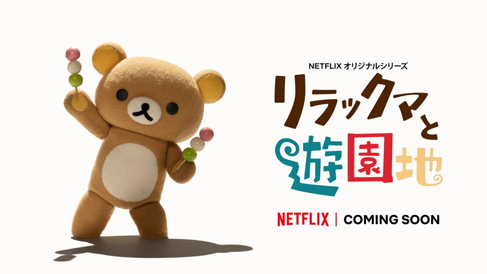
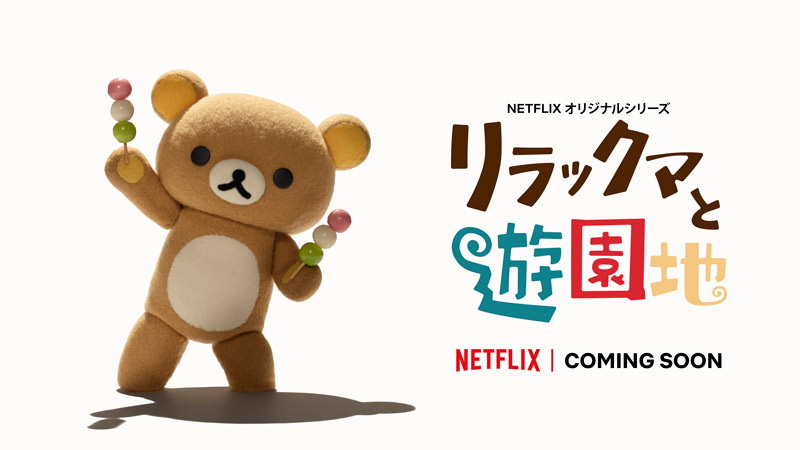

定格動畫
第一季 拉拉熊與小勳
第二季 拉拉熊主題樂園大冒險

拉拉熊的作者Aki Kondo是San-X的員工，過去曾創造甘栗將（甘栗ちゃん）等角色。當時，San-X要求員工每個月創造一個角色。Kondo在觀賞一齣關於日本寵物狗熱潮的電視表演後，羨慕起寵物狗的生活，不像她忙於工作且希望能好好放鬆，這讓她開始有了打造拉拉熊的靈感。拉拉熊被設計成有點懶散的模樣，因為Kondo覺得這樣的角色很有趣，且相信那將看來很可愛。
2003年9月開始販售拉拉熊的第一項週邊商品，商品主要以「再現拉拉熊生活的○○系列」的形式呈現。初期代表系列為「戶外系列」。這是將被小雞說「偶爾也該到戶外走走吧」而在房間中鑽進睡袋，心情上進入戶外的拉拉熊的系列。
至2009年，累計營業額（所有商品）為1000億日圓。在San-X所推出的角色之中，市場規模超越「趴趴熊（たれぱんだ）」（1999年〜2000年的兩年中營業額達700億円），是個持久的人氣角色。
至2009年，商品總銷售量約為1萬件，相關書籍的總銷售量為273萬本。
拉拉熊（日語：リラックマ Rirakkuma；英語：Rilakkuma）一天突然出現在小薰家中，擅自住下的咖啡色布偶熊，有黃色的耳朵、手腳掌和肥白色的肚子，自稱拉拉熊，是一名男性，來歷及真實身份不明。拉拉熊的背後有拉鍊，拉開可以看見水藍色水滴花紋的布料，其中的內容物則是秘密。布偶裝是買來的，有許多件備用，並使用鬆餅香氣的衣物柔軟劑清洗晾乾。布偶裝也曾經縮水變舊、被小白熊惡作劇加上裝飾或將備用的頭套拿來放置雜物等等。耳朵有時會因睡覺壓扁，似乎能夠自由地動耳朵。懶懶熊脂肪比相對比牛奶熊為低。
喜歡的食物有：奶油布丁、鬆餅、蛋包飯、熊仔餅和金飯碗的擔擔面等，享用喜愛的美食時會臉紅，身體會不由自主地震動。拉拉 熊本身也愛喝牛奶熊親自生產的牛奶。最常抱著小薰的黃色抱枕滾來滾去，懶懶散散地放空，此外尚有看電視、泡溫泉、聽音樂、逛網拍購買新的布偶裝等興趣。拉拉熊隨著繪本的特定主題，不時會再外穿貓、兔子、海獺、蜜蜂等布偶裝。懶懶熊和牛奶熊關係非常密切，也很喜歡和叔叔一同睡懶覺和撒嬌。懶懶熊實在是太可愛了，他愛搗蛋的性格吸引了小薰的注意。

小白熊（日語：コリラックマ Korirakkuma；英語：Korilakkuma，又譯牛奶熊、白熊、甜心熊）是2004年8月登場的新角色。外觀是米白色的布偶熊，有粉紅色的耳朵、手腳掌和白色的肚子，背後沒有拉鍊，胸口有一枚紅色的鈕扣，脂肪比例高。與拉拉熊同樣突然出現在小薰家，由小黃雞命名為小白熊（日文的原意為小拉拉熊）。曾被拉拉熊問「你是從哪裡來的熊？」，因此似乎並不是拉拉熊的舊識。懶懶熊和牛奶熊關係密切，經常自我生產新鮮牛奶給懶懶熊享用。
小白熊喜歡吃草莓、蘋果、櫻桃和鬆餅，興趣是玩耍和惡作劇，例如亂塗鴉、穿拉拉熊的衣服、擅自拉下拉拉熊的拉鍊、惡搞懶懶熊、不好好收拾玩過的玩具、讓遙控小鴨追逐小黃雞等。小白熊有很多玩具，經常登場的有遙控小鴨、企鵝布偶（在〈淘氣的每一天〉（ヤンチャナマイニチ）系列登場）、小貘布偶（在〈晚安〉（おやすみ）系列登場）、粉紅小鴨布偶、兔子布偶和積木。喜歡節奏快的音樂，聽音樂時多半戴著耳機。在後期的一些以小白熊為主角的主題插畫中，如2018年5月〈小白熊度假〉（コリラックマバケーション）、2019年12月〈鏡中的小白熊〉（鏡の中のコリラックマ）等，小白熊惡作劇的一面逐漸減少，較為突顯她的童真想像和女性特質，也顯得牛奶熊身材肥胖。
小白熊在早期的作品中不太說話，不過草莓系列中他看見心形草莓時說了一句「有了（あった）」，森林拉拉熊系列在給懶懶熊蘋果時說了一句「給你（ハイ）」，逐漸開始會講話了。有時也會模仿懶懶熊說話，比如懶懶熊說「拘泥小細節是成不了事的（あくせくしたってはじまりませんぜ）」時，小白熊模仿他說「不了事的～（ませんぜ～）」。
小黃雞（日語：キイロイトリ Kiiroitori，又譯管家雞、多嘴雞、豬鼻雞）是小薰飼養的寵物雞，比拉拉熊更早來到小薰家。自從拉拉熊住下，開始能自己出入籠子，主動負責掃除、料理、裁縫等家事，替懶散的拉拉熊和頑皮的小白熊善後。興趣是存錢，會藉由打掃的機會將發現的硬幣收集在罐子裡。
在漫畫中，小黃雞經常扮演吐槽役（ツッコミ役），斥責散漫的拉拉熊，或成為小白熊捉弄的對象，但仍把拉拉熊、小白熊當成好玩伴。
茶小熊（日語：チャイロイコグマ；英語：Chairoikoguma），又譯蜜茶熊、胸毛熊，是2016年3月登場的新角色。外觀深茶色的真實的熊（不是布偶），有白色的胸毛、黃色拉拉熊圖案的腳掌，是小白熊在蜂蜜森林發現的新朋友，名字由小白熊命名。
茶小熊體型略小於小白熊，愛吃蜂蜜，身上有蜂蜜的體香，屁股也因此沾到一滴熊頭形狀的蜂蜜。茶小熊喜歡吼叫、用四隻腳走路，會在小白熊造訪蜂蜜森林時與她一同玩耍，和小白熊、拉拉熊、小黃雞等角色一起分享蜂蜜。
茶小熊雖獨居於蜂蜜森林中，但他還有其它小動物朋友：熊熊蜜蜂（くまんばち），以及同樣有著胸毛的櫻花小栗鼠（サクラノコリス）、薄荷小鳥（ミントノコトリ）和青色小狼（アオイコオオカミ）。

小薰（日語：カオル Kaoru）是在東京都內工作的25歳粉領族，與拉拉熊、小白熊、小黃雞一同生活。小薰一開始對突然出現的懶懶熊感到疑惑，但逐漸覺得是隻療癒角色而照顧著他。在拉拉熊的要求之下，蛋料理的技術日益精進，還曾經做綿羊布偶裝給小白熊。在插畫中不曾和其它角色同時現身，只以聲音斥責拉拉熊，或在繪本開頭的新詩、介紹文或剪影中出現。San-X也未曾發行小薰圖樣的周邊商品。
在2019年的Netflix停格動畫《拉拉熊與小薰》中，首度登場於畫面中，具有褐色短髮的形象。職場與感情生活都不順心，只能從拉拉熊等角色的陪伴中得到療癒。
第一季 拉拉熊與小勳
第二季 拉拉熊主題樂園大冒險

名稱：拉拉熊的甜蜜時光特展
地點：松山文化創意園區五號倉庫
日期：2015/12/26 ~ 2016/03/20
票價：NT $ 180 ~ 280
名稱：拉拉熊懶萌日常特展
地點：松山文創園區 3號倉庫
日期：2019/12/28 ~ 2020/03/22
票價：NT $ 180 ~ 280